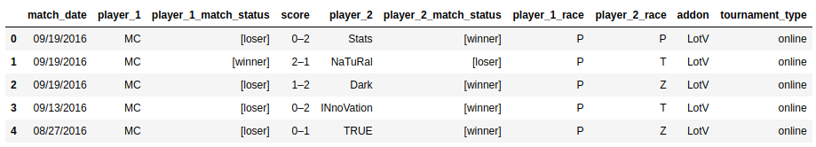

Slides by Adam Ingwersen
It's not, necessarily
... but betting makes most things marginally more interesting
... and building a good model may result in:
The Starcraft II Matches History Data from Kaggle
374.794 played games
1.856 different players
Sampling prior to MCMC is needed